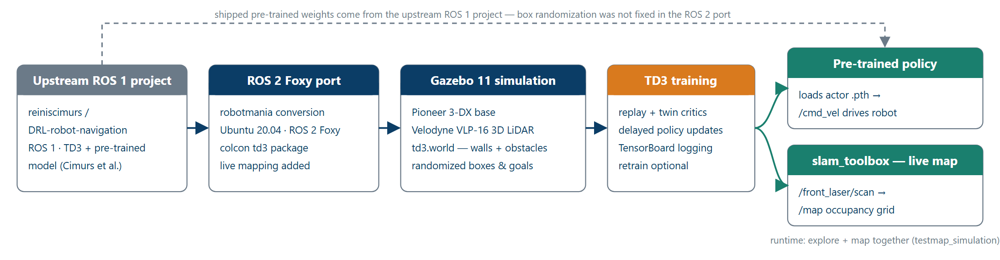
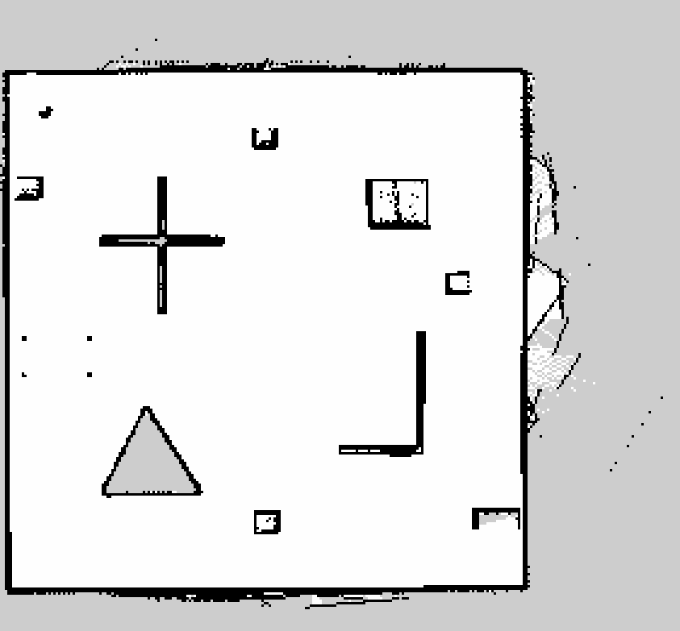

Project goal
Send a mobile robot to an arbitrary goal point in an unknown, cluttered room using only its
onboard perception, no map handed to it in advance, no classical motion planner in the
loop. The task is framed as a Markov Decision Process and solved end-to-end
with TD3, an off-policy algorithm for continuous action spaces. Formally it is
goal-conditioned continuous control: the policy maps a 24-dimensional
observation, what the robot senses of the world, plus where its goal is relative to it,
onto a continuous (linear, angular) velocity command, learning obstacle
avoidance and goal seeking together.
The robot perceives its surroundings through a simulated Velodyne VLP-16
3D LiDAR and takes its pose from odometry. On top of the goal-reaching policy the robot runs
online SLAM: as the agent drives around chasing continuously re-sampled goals,
slam_toolbox assembles an occupancy grid of the room in real time, turning a
point-to-point navigation policy into an autonomous exploration & mapping
system. Everything runs in simulation; the repository ships a pre-trained policy so the agent can
be watched navigating and mapping without training from scratch.
From idea to simulation
This project is, honestly, a port and an extension rather than a clean-sheet
build, and it is credited that way. The foundation is Reinis Cimurs’ ROS 1 project
reiniscimurs/DRL-robot-navigation,
the original TD3 navigation agent and its pre-trained model. The work here
ports that stack to ROS 2 Foxy (building on a community conversion by
robotmania) and adds live map generation during exploration, so the system does
not just reach goals but produces a usable map while doing so.
The simulated platform is a Pioneer 3-DX differential-drive base carrying a
Velodyne VLP-16, defined as a robot description (URDF + the vendored Velodyne
Gazebo plugin) and dropped into a hand-made Gazebo 11 world
(td3.world), a walled room seeded with cross- and triangle-shaped obstacles
and scattered cardboard boxes, with goal positions randomized on every reset to diversify
training. The whole thing is organised as clean, colcon-buildable ROS 2
packages (robot description, world, launch files, RViz config, and the RL node), targeting the
Ubuntu 20.04 / ROS 2 Foxy / Python 3.8 / PyTorch stack used in
the paper. It was carried out as an Integrator Project at GIPSA-Lab, Grenoble INP /
Université Grenoble Alpes (2024).

slam_toolbox maps live. (The shipped weights come from the upstream project, see the challenges below.)Implementation & architecture
The 24-value state. The Velodyne point cloud is collapsed into
20 angular sectors spanning the 180° in front of the robot; each sector
holds the minimum obstacle distance in that wedge, a compact obstacle map that is
cheap for the network to read. To that the state appends the Euclidean distance to the
goal, the heading error θ (the angle between the robot’s
facing and the direction to the goal), and the previous commanded action
(v, ω), 20 + 1 + 1 + 2 = 24 inputs in all.
The action. The actor emits two tanh-bounded numbers. The first is
remapped from [-1, 1] to [0, 1] m/s so the robot only ever
drives forward; the second is the angular velocity in rad/s. Together they are published to
/cmd_vel as a geometry_msgs/Twist, closing the control loop back through
the simulator. A shaped reward does the teaching: +100 for reaching the goal
(within 0.30 m), −100 for a collision (nearest LiDAR return below
0.35 m), and otherwise a small dense term
(v/2 − |ω|/2 − proximity) that rewards driving
forward, penalizes spinning, and pushes the robot away from anything close.
The learner is textbook TD3. The actor is an MLP
(24 → 800 → 600 → 2, ReLU hidden layers,
tanh output). The critic is twin, two independent
Q(state, action) heads, each → 800 → 600 → 1,
and the minimum of the two target Q-values is used to fight the
overestimation bias that plagues single-critic actor–critics. Learning adds the two other
TD3 ingredients: delayed policy updates (the actor and target networks refresh
only every second critic step) and target-policy smoothing (clipped noise on the
target action). Transitions land in a replay buffer (10⁶ capacity, batches
of 40), targets track slowly via Polyak soft updates (τ = 0.005,
γ = 0.99999), and exploration noise decays from 1.0 to 0.1 over the
first 5×10⁵ steps while the greedy policy is evaluated periodically. Loss and Q-value
curves are streamed to TensorBoard throughout.
SLAM runs beside the policy, not inside it. The robot also publishes a 2D laser
scan on /front_laser/scan; a separately launched slam_toolbox node
(online-async, use_sim_time) consumes that scan and emits a /map
occupancy grid that fills in live in RViz. The two systems are deliberately decoupled, the
learned controller never sees the map, and mapping never touches the policy, so exploration
is a pure by-product of the goal-driven driving.
![Architecture diagram: the Gazebo simulation feeds a 24-value state (20 LiDAR sectors, distance to goal, heading error, previous action) into the TD3 actor, which outputs a continuous cmd_vel Twist back to the robot. On the training side, transitions feed a replay buffer, twin critics compute min(Q1,Q2), and delayed target-policy-smoothed updates flow back to the actor with TensorBoard logging. A parallel, independent path sends the 2D laser scan to slam_toolbox, producing a live occupancy grid in RViz.](../assets/img/drlnav-architecture.png)
/cmd_vel; the off-policy learner (middle) trains the actor from a replay buffer through twin critics with delayed, smoothed updates; the SLAM path (bottom) runs in parallel and independent of the policy.Critical challenges
The physics quirk that changed which weights ship
The training environment was meant to scatter the cardboard boxes on every reset to keep episodes diverse, but in the ROS 2 / newer-Gazebo port the boxes stopped repositioning, most likely a side effect of the ROS 1 → ROS 2 migration. With the randomization broken, a policy trained from scratch here saw a far less varied world and its quality suffered. The pragmatic, honest resolution was to ship and demo the pre-trained policy from the upstream ROS 1 project rather than a weaker locally-trained one, a reminder that a small simulator regression during a port can quietly undermine the data distribution the whole method depends on.
Unstable training under a real time budget
Training from scratch was not reliably convergent within the project’s means: the average Q-value would sometimes decrease mid-run (the agent stopped improving), and a full run takes roughly 8–10 hours. Converging a fresh TD3 policy to the quality of the upstream model needed more compute and wall-clock time than the Integrator Project allowed, which, combined with the box-randomization regression above, is exactly why the demonstrated agent uses the upstream weights. This is stated plainly rather than papered over.
Honest scoping
Three limitations are worth naming. The project is simulation-only, there
is no physical robot, and no sim-to-real claim is made. Several scripts use
hard-coded paths relative to the home directory (the policy loads from a fixed
./DRL_robot_navigation_ros2/… location), so the workspace expects to be cloned
into ~. And a vendored Cartographer configuration
(omni_cartographer) is kept for reference only and is not used at runtime;
all live mapping is done with slam_toolbox.
Results & analysis
 Play demoTD3 robot navigation with live SLAM mapping: demo
Play demoTD3 robot navigation with live SLAM mapping: demoslam_toolbox maps it live. Left: the occupancy grid growing in RViz · Right: the Gazebo simulation with the robot, obstacles, and laser scan.The clip shows the full system running: the pre-trained TD3 policy continuously re-targets goals and threads the Pioneer 3-DX between the obstacles, while the parallel SLAM node turns those wanderings into a map. What is worth watching is that the two halves of the screen are independent, the robot on the right is driven purely by the learned velocity controller, and the map on the left is assembled from its laser scan without ever feeding back into the policy.

slam_toolbox during exploration, black is walls/obstacles, white is free space, grey is unmapped. The walls, the cross- and triangle-shaped obstacles, and the scattered boxes are all captured. The raw .pgm/.yaml outputs (and a few more saved runs) live in the repository’s maps/ folder.The map is the headline result: it demonstrates the end-to-end goal, a robot with no prior knowledge of the room, driven by a learned policy, produces a coherent occupancy grid in which every structural feature of the world is recognisable. Training itself is instrumented with TensorBoard (loss and Q-value curves), but because the from-scratch runs were unstable and compute-limited, those curves are treated as monitoring rather than as a headline claim, the demonstrated navigation and mapping quality comes from the upstream-trained policy, and this page reports it as such.
Future work
Directions the paper and repository flag for anyone continuing the work:
- Fix the box-randomization / physics regression in the ROS 2 Gazebo port and successfully retrain a policy from scratch, so the shipped weights are the project’s own rather than inherited.
- Add a global exploration strategy that samples goals toward unmapped regions instead of anywhere in free space, so the room is explored, and mapped, faster and more completely.
- Port to a TurtleBot and validate on real hardware (for example in the GIPSA-Lab), taking the system out of simulation for the first time.
- Package the Python dependencies and paths so the workspace builds and runs from any location, retiring the hard-coded home-directory assumptions.
Developed with Saleh Abuali and Perla Sammour, supervised by Bogdan Robu and Ahmad Hably, at GIPSA-Lab, Grenoble INP / Université Grenoble Alpes (2024). It builds on Cimurs et al., Goal-Driven Autonomous Exploration Through Deep Reinforcement Learning (IEEE RA-L, 2022).